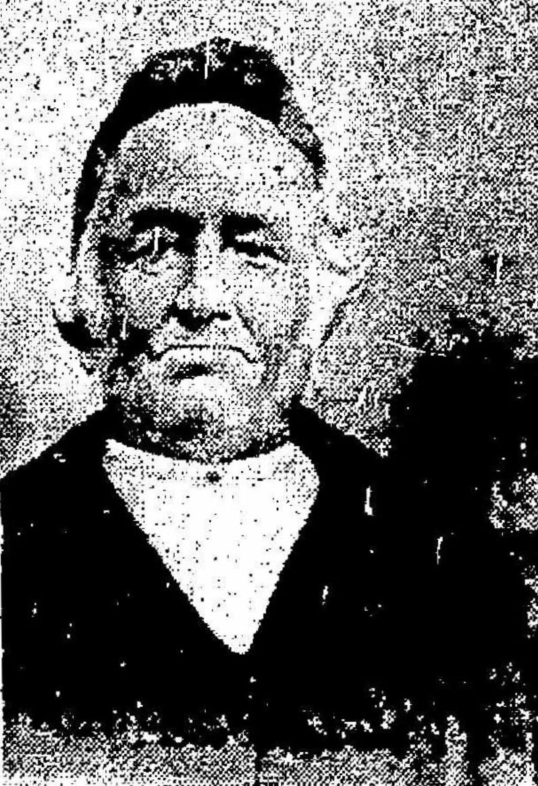
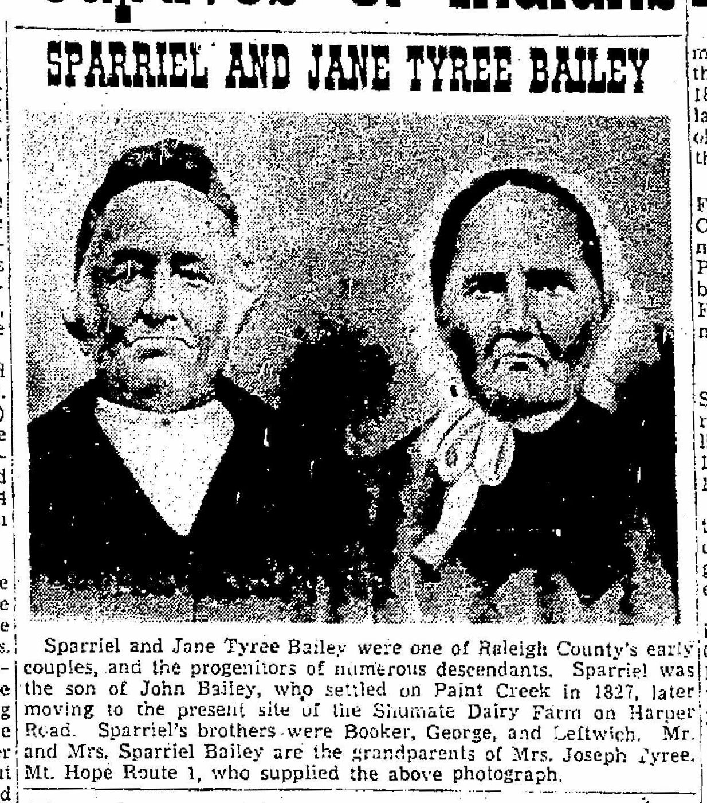

Sparrel Bailey
1813 – 1880 / 4 May 1881
Quick Facts
Immediate Family
Parents
John B. (Jonathan Bell) Bailey × Sarah “Sally” Jane Stanley SUPPORTEDJohn B. Bailey is Jonathan Bell Bailey, the same man. Turner 1982 annotates Sparrel “[s/o John & Sarah Bailey]”; the cemetery transcription calls him “(son of John B. and Sarah Jane? Bailey)”; Riffe 1950 names John’s sons, including Sparriel. John was born 30 January / 1 February 1790, Dinwiddie County, Virginia, and died 19 March 1872 at White Stick, Raleigh County (death register, v 1 p 14). Sarah’s maiden name is carried as Stanley on the Franklin County marriage index — “John Bell” × “Sally Standley,” 5 July 1813 — and on the consistent PAF and Rootsweb chains, which give her parents as William Stanley Jr. × Nancy Mullins. The live alternative is carried only in Research Notes. Sparrel’s birth about 1813 sits uncomfortably against his parents’ 5 July 1813 marriage — he was born in the second half of 1813 or before the marriage — a tension, not a refutation. John’s own parents are a Gen VI matter and are not settled here.
Spouse
Mary Jane Tyree (1813 / April 1814 – 20 October 1902), married about 1832 UNPROVEDHis only wife named in any record. Her birth year and birthplace are both unresolved — 1813 on the stone against April 1814 on FamilySearch and in the 1900 census, Patrick County against Powhatan County — and her 20 October 1902 death, while supported, has no death-register entry behind it. Her parents were Satterwhite W. Tyree Sr. × Rhoda “Roady” Taylor — see her page.
Children
John Washington Bailey (born about 1834–35; Confederate soldier, never returned, fate unknown) SUPPORTEDJames Monroe “Jim” Bailey (12 September 1836, Fayette County – 12 June 1925, Raleigh County; married Mary Godbey 20 November 1856) SUPPORTED
William Henderson Bailey (25 December 1837 / 1838 – 25 March 1909; married Aley Ann Teel 25 December 1856) SUPPORTED
McDowell Bailey (born June 1841; married Mary F. Francis 6 March 1866) SUPPORTED
Margaret J. “Maggie” Bailey (born about 1842–1844 – 12 December 1912, Beckley) SUPPORTED
Amos Bailey (1 November 1845 / about 1847 – 5 April 1917; married Miram A. Wriston 29 November 1866) SUPPORTED
Armenta / Ariminta Bailey (born about 1846) SUPPORTED
Sarah Amanda Bailey (19 July 1848 – 17 October 1904; married William Mullins 14 February 1877) SUPPORTED
GEORGE_LINK SUPPORTED
Nine children, in birth order, named in the 1850 census household (Washington 15, James 14, William 12, McDowell 9, Margaret 6, Ariminta 4, Manda 2) and the 1860 household (John W. 25, McDowell 18, Margaret 16, Amos 13, Sarah A. 11, George 8). George Washington is the direct line. Six of the marriages are documented in the Raleigh County marriage transcriptions, which name parents: James × Mary Godbey 20 November 1856; William × Aley Ann Teel 25 December 1856; McDowell × Mary F. Francis 6 March 1866; Amos × Miram A. Wriston 29 November 1866; Sarah Amanda × William Mullins 14 February 1877; George × Letitia Warden 12 June 1872. No Raleigh marriage record exists for John Washington, Margaret, or Armenta. Two births are unidentified: in the 1900 census Mary Jane reported 11 children born and 8 living, against the nine named here — the two extra births are not named anywhere, and they are not Alexander, Wilhelmina, or Poke Bailey, who are ruled out as children. The eight living in 1900 are consistent with James Monroe, William H., McDowell, Margaret, Amos, Armenta, Sarah Amanda, and George Washington, so Armenta and McDowell were likely still alive in 1900. The disputed Jane is not a tenth child — she is Booker Bailey’s daughter, not Sparrel’s. Almira Susan Bailey (born about 1858; married Leander Jasper Gadd 1 January 1879) is a granddaughter, most likely William H.’s daughter, not a tenth child. FamilySearch IDs for the nine: John Washington LHK9-WCT; James Monroe LCC4-CNN; William Henderson LBW2-2DP; McDowell LCV9-945; Margaret LHK9-W5B (a second Margaret, LDZG-NN4, is carried on the same tree — a duplicate, not a second daughter); Amos L626-1TD; Armenta MV9P-BYM; Sarah Amanda LHK9-WKS; George Washington LV42-Z6V. FamilySearch also carries Alexander LVN5-1SY, Wilhelmina MMP8-KJJ, and Poke LVNR-MW6 as children — all three are ruled out here and are not adopted.
Siblings
Nancy Bailey (12 August 1816 – 28 May 1891; married Meredith C. Clay) SUPPORTEDBooker Bailey (22 October 1818 – 30 January 1888; married Sarah Stover) SUPPORTED
George W. Bailey (October 1819; married Rachel Harper) SUPPORTED
Judah Bailey (about 1815; married Sampson Stover, March 1832) SUPPORTED
Leftridge / Leftwich Bailey (12 May 1823 – about 1848; married Arena “Reena” Pettry) SUPPORTED
Phoebe Margaret Bailey (born 1824) SUPPORTED
Elizabeth Jane Bailey (15 September 1826 – 9 August 1869; married (1) Fleming Stanley 1 September 1843, (2) John Sampson Cook) SUPPORTED
Eight children of John B. × Sarah Bailey, by shared parent — John B. had no second marriage, so there are no half-siblings on this side. The 1850 census puts the three brothers in the same district on the same enumeration sweep — Sparrel at household 78, Booker at 86, George at 18 — with their father John at 219. Phoebe’s spouse is open: Geni gives Charles William Workman, I, and Rootsweb gives a Fayette County marriage to Charles William Workman, 3 September 1840, while the John B. couple profile gives John W. Lilly — the marriage record has not been re-read, so no spouse is stated here. FamilySearch adds a ninth sibling, Elvira Bailey (died 1846), tree-only and not built on here. The older account’s “more than twenty full and half-siblings” is contradicted.
On Family Tree Sites
Life Timeline
1813 · age 0
Born, Franklin County, Virginia SUPPORTED (FamilySearch, 6 sources; Find a Grave; the shared stone reads 1813)
about 1820s
Came to Paint Creek, Raleigh County, with his father’s family SUPPORTED (the year is conflicted: the Warden account says about 1820, Riffe 1950 says about 1827 — see Research Notes)
about 1832 · age 19
Married Mary Jane Tyree UNPROVED (no marriage record has been found)
1835–1852
Nine children born: John Washington about 1834–35, James Monroe 1836, William H. 1837, McDowell 1841, Margaret about 1842–44, Amos 1845, Armenta about 1846, Sarah Amanda 1848, George Washington 1852 SUPPORTED (1850 and 1860 censuses)
20 August 1849 · age 36
Sold land in Fayette County — to Clairborne Curtis (Deed Book D, p. 143) and to Stephen Sanders (p. 145), both on Cranberry Branch SUPPORTED (Fayette grantor deed index entries read; the deed texts have not been read)
26 July 1850 · age 37
Census, Raleigh County, household 78: Sparel 37, Jane 36, Washington 15, James 14, William 12, McDowell 9, Margaret 6, Ariminta 4, Manda 2 DOCUMENTED (image read; no Amos line — Amos, compiled as born 1 November 1845, is absent)
November 1850 · age 37
Charter member of the Raleigh Baptist Church of Christ, and one of its two original deacons SUPPORTED (Wood 1994, p. 568; the church’s own About page confirms the November 1850 organization)
1860 · age 47
Census, Raleigh County, p. 81: Sparriel 47, Mary J. 46, John W. 25, McDowell 18, Margaret 16, Amos 13, Sarah A. 11, George 8 SUPPORTED (Amos at 13 points to a birth about 1847, not 1845)
1870 · age 57
Census, Town District, household 21: Sparriel 58, Mary V. 56, Margaret 25, Sarah M. 21, George 18 SUPPORTED
1880 · age 67
Census, Town District, ED 131: Sparriel 66, Mary J. 65, Margret 34, Walter K. Bailey 10, Ann Farler 15 SUPPORTED (alive at the census reference date, 1 June 1880)
1880 / 1881
Died, Raleigh County — 1880 on the headstone, 4 May 1881 on the death register UNPROVED (unresolved; see Research Notes)
Burial
Sparriel Bailey Cemetery, off Dry Hill Road, Beckley SUPPORTED (the shared stone, read directly)
Life Story
Sparrel Bailey was born in 1813 in Franklin County, Virginia, the son of John B. Bailey and Sarah “Sally” Jane Stanley, and came with his father’s family to Paint Creek in what is now Raleigh County, West Virginia, in the 1820s — the Warden account says about 1820, Riffe says about 1827, and no record settles the year. He married Mary Jane Tyree about 1832; no marriage record has been found. He farmed all his life — the 1850 census lists him at 37 with $850 of real estate, and every census from 1850 to 1880 calls him a farmer — and in August 1849 he sold land on Cranberry Branch in Fayette County, to Clairborne Curtis and to Stephen Sanders. Nine children were born to Sparrel and Mary Jane between about 1834 and 1852, and the youngest, George Washington, carries the line.
The clearest record of the family is the 1850 census, read from the image: household 78, District 59, Raleigh County, 26 July 1850 — Sparel, 37, Jane, 36, Washington, 15, James, 14, William, 12, McDowell, 9, Margaret, 6, Ariminta, 4, and Manda, 2. One line is missing from that household, and the image confirms the transcription: Amos, compiled as born 1 November 1845, is not there, though he appears at 13 in 1860 — which points to a birth about 1847 instead. In November 1850 Sparrel and Mary Jane were among the fifteen charter members of the Raleigh Baptist Church of Christ, organized at the Raleigh Court House, and Sparrel was one of its two original deacons, with Jacob Smith — the biggest new fact of this family’s dig, carried at supported on the strength of Jim Wood’s county history, page 568, since the church’s own About page confirms the November 1850 founding but names no members.
His eldest son is the family’s Civil War loss. John Washington Bailey was a Confederate soldier — the National Park Service gives a John W. Bailey, Private, Company E, 31st Regiment, Virginia Militia — and, as Riffe wrote, “was a Confederate soldier and never returned. His fate was never known.” No death year is stated here; the compiled 1863 death year is lore, not a record. Sparrel himself was 48 when the war began and served in no unit. He was still alive at the 1880 census, head of household at 66 with Mary Jane, 65, their daughter Margaret, 34, and two young people, Walter K. Bailey, 10, and Ann Farler, 15, whose places in the family are not established. His death is the one fact this family cannot settle: the shared stone reads 1813–1880, while the West Virginia death register gives 4 May 1881, age 68, parents John and Sarah Bailey, with probate 2 July 1881 — and the 1880 census, taken 1 June 1880, rules out a 4 May 1880 death. Both dates are carried here, neither as settled fact.
Photo Gallery


Sources and Evidence
- 1850 census, Raleigh County, Virginia (now West Virginia), District No. 59, household 78, 26 July 1850 (image read): “Sparel Bailey 37”, “Jane Bailey F 36”, “Washington Bailey M 15”, “James Bailey M 14”, “William Bailey M 12”, “McDowel Bailey M 9”, “Margaret Bailey F 6”, “Arriminta Bailey F 4”, “Manda Bailey F 2”. No Amos line — the image agrees with the transcription. DOCUMENTED
- 1860 census, Raleigh County, p. 81 (read): “Sparriel Bailey 47”, “Mary J Bailey 46”, “John W Bailey 25”, “Mc Donell Bailey 18”, “Margaret J Bailey 16”, “Amos Bailey 13”, “Sarah A Bailey 11”, “Geoge Bailey [sic] 8”. SUPPORTED
- 1870 census, Town Magisterial District, Raleigh County, household 21, p. 4 (read): “Sparriel Baley 58”, “Mary V Baley F 56”, “Margaret Baley F 25”, “Sarah M Baley F 21”, “George Baley M 18”. SUPPORTED
- 1880 census, Town District, Raleigh County, ED 131, sheet 184B (read): “Sparriel Bailey 66”, “Mary J. Bailey 65”, “Margret Bailey 34”, “Walter K. Bailey 10”, “Ann Farler 15”. SUPPORTED
- 1900 census, Town District, Raleigh County, ED 121, sheet 5B, line 63 (read): “Mary J Bailey F 86, Birth April 1814 VA, Widowed, Head”, “Number of Living Children 8, Number of Children 11”, “Margret Bailey F 49”, “Avery Bailey M 19”, “Bertha Davis F”. SUPPORTED
- West Virginia Deaths, 1804–1999 (FamilySearch ark NM5S-LG8, read): Sparriel Bailey, Event Date “04 May 1881”, Event Place “Raleigh Co., West Virginia”, Age “68 years”, Birth “1813”, Birthplace “Franklin Co., Va.”, Source Details “v 1 p 29”, Parents Mother “Sarah”, Father “John Bailey”. The index gives Marital Status “Single”; WikiTree’s transcription of the same record gives “Married”. DOCUMENTED
- Shared stone, Sparriel Bailey Cemetery, off Dry Hill Road, Beckley (photograph read; USGenWeb transcription spar1.txt, read directly): “SPARRIEL BAILEY / 1813—1880 / MARY JANE / HIS WIFE / 1813—1902”. SUPPORTED
- Franklin County, Virginia, marriage index (GenealogyTrails, read directly; FamilySearch ark XRQ6-FYQ): “John Bell” × “Sally Standley”, Event Date “5 Jul 1813”, Franklin, Virginia. The image is the compiled “Marriage Bonds 1786–1853, Franklin County, Virginia” index (image 61 of 113), not an original bond; it corroborates the index, and it spells the groom “Bell”. SUPPORTED
- Death record of John B. Bailey (FamilySearch ark NM5S-4VV, read): “John B. Bailey”, “19 Mar 1872”, “White Stick, Raleigh Co., West Virginia”, “82 years”, “Birth Date: 1790”, “Birthplace: Dinwiddie Co., Va.”, “Marital Status: Married”, “Occupation: Farmer”, “Source Details: v 1 p 14”; the wife is indexed “Jane Bailey”. DOCUMENTED
- Raleigh County Deed Book C, p. 12 (FamilySearch ark 3Q9M-C37T-M956, DGS 8589232, image 38 of 606, read in full): deed of 4 January 1871, John B. Bailey and Sarah his wife to Booker Bailey — two tracts, “about fifty Five acres more or less” on the Turnpike Road from Raleigh Court House and “Thirty three and three fourths acres”, less 3¾ acres “heretofore conveyed to John Stanley”, “in consideration that the party of the 2nd part, shall take care provide money and maintain the parties of the first part during their natural lives and in the further consideration of One Dollar”. DOCUMENTED
- Fayette County Grantor Deed Index A–B, 1831–1926 (DGS 8219387, image 157 of 211, p. 81, index entries read): “Bailey Sparriel al Clairborne Curtis D 143 Cranberry Br Aug 20 1849” and “Bailey Sparriel al Stephen Sanders D 145 Cranberry & Maple Aug 20 1849”. The deed texts have not been read. The same index shows the post-mortem estate conveyances to his son George (Book 14, p. 612) and others. SUPPORTED
- Raleigh County marriage transcriptions (wvgw.net B page, read directly): “James 20 Raleigh s/o Spariel/Jane to Mary Godby 19 Pulaski d/o Enoc/Matilda 20 Nov 1856”; “William 19 Raleigh s/o Spariel/Jane to Aley Ann Teel 27 Henry, VA d/o Mankin/Emily 25 Dec 1856”; “McDowell 24 Raleigh s/o Sparriel/Jane to Mary F. Francis 24 Raleigh d/o James/Susan 6 Mar 1866”; “Amos 21 Raleigh s/o Sparriel/Mary Jane to Miram A. Wriston 20 Raleigh d/o Thomas/Martha 29 Nov 1866”; “Sarah Amanda 24 Raleigh to William Mullins 27 Wyoming 14 Feb 1877”; “George 20 Raleigh to Letitie Warden 22 Raleigh 12 Jun 1872”. DOCUMENTED
- Wood, Jim, Raleigh County West Virginia (BJS Printing & Office Supplies, Beckley, 1994), p. 568, as quoted on Sparriel Bailey’s Find a Grave memorial bio (read directly): “Matthew Ellison was the first pastor of the First Baptist Church of Beckley, serving the church from 1850 to 1879, and Jacob Smith and Sparriel Bailey were the original deacons.” SUPPORTED
- First Baptist Church of Beckley, About page (beckleyfirstbaptist.org/about, read directly): “the Raleigh Baptist Church of Christ... was organized in November 1850”, with Matthew Ellison “the first pastor” and the Sunday school “not until 1874”. The page contains no “Bailey”, no charter-member list, and no deacon names. DOCUMENTED
- Riffe, “First Settlers” (Beckley Post-Herald Centennial Edition, 26 August 1950, read directly): John Bailey “came to Paint Creek from Franklin County about 1827”; “Sparriel’s son, John W., was a Confederate soldier and never returned. His fate was never known.” SUPPORTED
- National Park Service, Civil War Soldiers & Sailors System (read directly): “Bailey, John W. — Side: Confederacy, Location: Virginia, Battle Unit: 31st Regiment, Virginia Militia”, Company E, Rank In Private, Rank Out Private, Film Number M382 Roll 3. No age, residence, or fate is given. SUPPORTED
- Turner 1982 annotations (read directly): Sparrel “[s/o John & Sarah Bailey]”; John B. Bailey “60 [born Dinwiddie County Va. D. 19 Mar 1872]”; Satterwhite Tyree’s daughter “Jane 36 [d/o Saterwhite & Rhoda Tyree]”. SUPPORTED
- Newspaper clipping, “SPARRIEL AND JANE TYREE BAILEY” (Find a Grave photo, read directly): “Sparriel and Jane Tyree Bailey were one of Raleigh County’s early couples, and the progenitors of numerous descendants. Sparriel was the son of John Bailey, who settled on Paint Creek in 1827, later moving to the present site of the Shumate Dairy Farm on Harper Road. Sparriel’s brothers were Booker, George, and Leftwich. Mr. and Mrs. Sparriel Bailey are the grandparents of Mrs. Joseph Tyree, Mt. Hope Route 1, who supplied the above photograph.” The joint portrait on this page is cropped from that clipping; the individual portraits are crops of the same photograph. SUPPORTED
- Geni, FamilySearch, WikiTree, and Find a Grave, read live 9 November 2026: Geni Sparriel 6000000008971784016; FamilySearch Sparriel MRCN-F34 (birth 1813 Franklin, Virginia, 6 sources; death “4 May 1880”, 2 sources); WikiTree Sparriel Bailey-19039 (born 1813 Franklin Co., VA; died “4 May 1881”, Beckley; probate “2 Jul 1881”; father of 8 only — it omits Armenta); Find a Grave Sparriel 97229644 (verified live at build time) and Mary Jane 97245680. SUPPORTED
- Warden account (read directly): Sparriel “son of John B. and Sarah Jane Maynor Bailey”; the Tyrees “from Powhatan Co.”; migration “~1820”. The Maynor maiden name is carried only in Research Notes. SUPPORTED
Grades: DOCUMENTED an original record says it · SUPPORTED several records point to it · FAMILY ACCOUNT the family’s own telling · UNPROVED a lead, not proved.
Research Notes and Open Questions
- Grades: DOCUMENTED means an original record read directly says it; SUPPORTED means several records point to it; FAMILY ACCOUNT means the family’s own telling; UNPROVED means a lead, not proved. Every fact on this page carries its grade.
- Death, unresolved: the shared stone reads 1813–1880, and Find a Grave and FamilySearch both carry “4 May 1880” — but the 1880 census, reference date 1 June 1880, shows Sparriel alive at 66, which rules out a 4 May 1880 death. The West Virginia death register (v 1 p 29) gives 4 May 1881, age 68, parents John and Sarah Bailey, and WikiTree transcribes probate 2 July 1881. The register itself is internally inconsistent — FamilySearch’s index gives Marital Status “Single”, WikiTree’s transcription of the same record gives “Married”. The balance has shifted toward 1881, but neither date is stated here as settled.
- Birth and migration, open: born 1813 is supported (censuses, stone, trees); the migration year is conflicted — the Warden account says about 1820, Riffe 1950 says about 1827, and the newspaper clipping on this page also says 1827. The 1820s are carried, not a single year.
- Marriage, no record: no marriage record for Sparrel × Mary Jane has been found in Fayette or Raleigh County, and none is stated here. FamilySearch’s “26 October 1854, Raleigh” marriage date is an error — impossible against children born from 1835 — and is never used.
- Parents — Stanley vs Maynor: Stanley stands on the Franklin County marriage index (“Sally Standley”, 5 July 1813) and the consistent PAF and Rootsweb chains, which give Sarah’s parents as William Stanley Jr. × Nancy Mullins. Maynor is the live alternative: the Warden account calls her “Sarah Jane Maynor Bailey”, and Casto Connections does the same — but Casto’s own Maynor entry gives her parents as William Stanley Jr. × Nancy Mullins, a garble, and omits Sparriel from the children. A Maynor family did live in Raleigh County in 1850, and Sparriel later sold land to Richard Maynor (Raleigh deed index, p. 401, text not read) — a Maynor in the family’s orbit, but not evidence for Sarah’s maiden name.
- Birth against the marriage (C7): Sparriel was born about 1813 (age 37 in July 1850 = born July 1812–July 1813) but his parents married 5 July 1813. He was born in the second half of 1813 or before the marriage. A tension, not a refutation.
- Amos, absent in 1850: Amos is compiled as born 1 November 1845 — he would have been 4 in July 1850 — but the 1850 household image, re-read, has no Amos line, and the next household is Wm Blake. He appears at 13 in 1860, which points to a birth about 1847. The 2026-09 children worker’s claim that the cemetery transcription lists “Amos Bailey 1846–1917 with wife Miriam Marilda Mullins” is not reproduced on a direct read of the current spar1.txt (83 lines, no Amos entry) and is not repeated here as a transcription fact.
- Amos’s wife: the Raleigh marriage transcription, read directly, gives “Amos 21 Raleigh s/o Sparriel/Mary Jane to Miram A. Wriston 20 Raleigh d/o Thomas/Martha, 29 Nov 1866” — his wife was a Wriston, not “Miriam Warden, Hughes Jefferson Warden’s younger sister,” which the prior notes carried and which is contradicted. The signed-in pass did not re-read the marriage record, and FamilySearch and Geni still say Warden; FamilySearch searches found no marriage record at all, and no marriage source is attached to Amos or to Miriam. The Wriston finding is carried, with that note, and Warden is not stated here as fact. Whether he later married a Miriam Mullins is open — no person of that name appears on FamilySearch for this family.
- Jane is Booker’s daughter, not Sparrel’s: the 1850 census household 86 has “Jane Bailey 7 F” and “Ariminta Bailey 6 F”, and the 1860 household of Booker has “Jayne Bailey F 16” and “Araminta Bailey F 14” — the disputed Jane (born about 1844) and a second Araminta are Booker’s daughters. Sparrel’s Armenta, 4 in 1850, was living with her uncle Booker in 1860. The two Arimintas are two different girls. The Mercer County, December 1865 marriage of Jane (Fleshman) × Robert C. Christian was not found as a record in the West Virginia Vital Research Records (three searches) and rests on Riffe 1950 only — it is not stated here as a recorded marriage.
- Children roster — eleven born, nine named (C21): in the 1900 census Mary Jane reported 11 children born and 8 living, against the nine named in the Children card. Two births are unidentified. They are not Alexander, Wilhelmina, or Poke Bailey — Alexander is most economically a confusion with Alexander Warden, born 1853, Tisha’s brother, whose 1872 wedding William H. performed, and Wilhelmina and Poke appear on Geni and FamilySearch only, with no record. The eight living in 1900 are consistent with James Monroe, William H., McDowell, Margaret, Amos, Armenta, Sarah Amanda, and George Washington. Almira Susan Bailey (born about 1858; married Leander Jasper Gadd 1 January 1879) is a granddaughter, most likely William H.’s daughter, not a tenth child.
- Margaret’s birth, unresolved: the obituary (Raleigh Register, 20 December 1912, via the cemetery transcription) gives age 70 years 12 days at death 12 December 1912, pointing to about 30 November 1842; the censuses give 6 in 1850 (about 1844), 16 in 1860, 25 in 1870, 34 in 1880 (about 1846), and 49 in 1900 (about 1851). No single birth year is stated. Rootsweb’s “December 1851” is impossible — she was already 6 in July 1850 — and is not used. Her obituary’s full text has not been read, and the father of her sons Avery (born 1881) and Walter Raleigh (born about 1883) is unresolved; Walter K. Bailey, 10, in the 1880 household is not the same boy.
- John Washington, no death year: Riffe 1950 says he “was a Confederate soldier and never returned. His fate was never known.” The National Park Service gives a candidate only — John W. Bailey, Private, Company E, 31st Regiment, Virginia Militia, film M382 roll 3 — with no age, residence, or fate. FamilySearch gives 1863 as his death year, with no record read; no death year is stated here.
- FamilySearch errors, carried as errors: the “26 October 1854, Raleigh” marriage date; a second spouse link joining Sparriel to Sarah Stanley (LV42-PQ5) — Sarah Stanley is his mother, not a spouse, and the child attached to that link, George Washington Bailey LV42-Z6V, is his son by Mary Jane; and a 13-child roster (adding Alexander, Wilhelmina, Poke, and a second Margaret) that conflicts with Mary Jane’s own 1900 report of 11 born. Geni gives 13 children and contradicts itself on his death — the header says 1881, the About says 1880 — and Mary Jane’s Sources tab is empty. WikiTree omits Armenta and lists him as father of 8 only.
- John B.’s parents, Gen VI tension (C14): the John B. × Sarah couple profile is split — its prose names Richard Peyton Bailey × Elizabeth Anne Belcher, its Research Notes say UNKNOWN after detaching John Payton Bailey × Nancy Ann Davidson. The Each Generation page carries Richard Peyton × Elizabeth Anne as Gen VII. The question belongs to Gen VI and is not re-litigated here. Sarah’s death is also unsettled: “15 Feb 1884” on the compilations with no source, against Find a Grave’s “1796–1888”.
- Still open: the Fayette County marriage record for Sparrel × Mary Jane, about 1832; the Fayette Deed Book D pp. 143 and 145 deed texts (index entries read only) and the Raleigh Deed Book p. 401 deed to Richard Maynor (index entry only); Margaret’s obituary, full text; Armenta after 1860 (no marriage or death found); McDowell after the 1860 census; and Ancestry — Tricia’s tree was blocked site-wide at the signed-in pass (“automated traffic is prohibited”), so no Ancestry ID is carried here and the tree is unread, not absent.
- Tree checks, signed in 9 November 2026: Geni — Sparriel 6000000008971784016, Mary Jane 6000000008971714853; FamilySearch — Sparriel MRCN-F34, Mary Jane M67M-DKB; WikiTree — Sparriel Bailey-19039, Mary Jane Tyree-421; Find a Grave — Sparriel 97229644 (verified live at build time), Mary Jane 97245680.
Profile history: Created 9 November 2026 from the family couple profile and research notes.